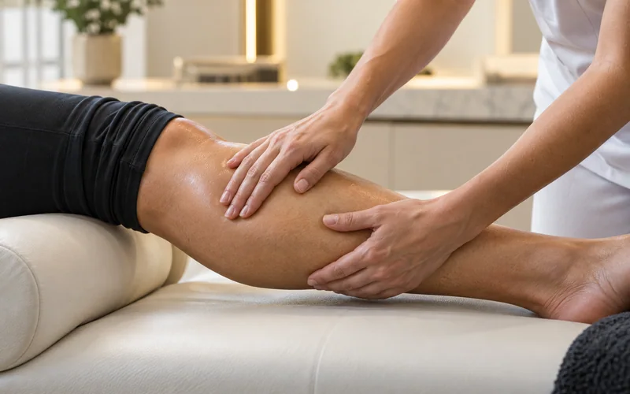

Drenagem linfática
em Águas Claras.
Um momento para conversar sobre seu cuidado corporal e seu bem-estar.
Atendimento na Sthetic Center, no LED Office, com avaliação individual e acompanhamento.
Agendar pelo WhatsApp
Drenagem linfática com atenção ao seu momento
O atendimento de drenagem linfática começa com a compreensão do seu objetivo corporal e do contexto em que procura o cuidado. Uma busca por bem-estar e uma procura no período após cirurgia exigem conversas e planejamentos próprios. Conte à equipe o motivo do contato para organizar a avaliação adequada.
Na unidade em Águas Claras, a Dra. Waldirene conversa sobre sua rotina, histórico e regiões de interesse. A avaliação ajuda a definir se o atendimento é apropriado e como será o acompanhamento. Caso tenha passado por cirurgia, informe a data e leve as orientações da equipe que acompanha sua recuperação.
Seu atendimento acontece em Águas Claras, no LED Office. Use o contato desta página para falar sobre drenagem linfática e consultar os próximos horários da Sthetic Center.
Consultar perguntas frequentesUma avaliação
pensada para você.
O foco da conversa sobre drenagem linfática é cuidado corporal. A profissional responsável avalia seu caso, conversa sobre suas expectativas e esclarece as possibilidades do atendimento.
O que conversar na avaliação
- Sua rotina e objetivo corporal
- Avaliação para drenagem linfática
- Organização do acompanhamento
A indicação depende da avaliação individual. Converse sobre cuidados, limitações e expectativas antes de decidir. Resultados e evolução variam de pessoa para pessoa.
Do primeiro contato
ao seu plano de cuidado.
- Converse pelo WhatsApp
O botão já abre uma mensagem sobre drenagem linfática. Conte suas dúvidas diretamente à equipe.
- Organize sua avaliação
Consulte horários, valores e condições do atendimento. A equipe confirma a disponibilidade com você.
- Defina os próximos passos
Na avaliação, conheça o planejamento e as orientações adequadas ao seu caso.
Seu atendimento
em Águas Claras.
QS 1, Rua 210, lotes 34 e 36Bloco E, loja 26 · LED Office
Águas Claras, Brasília — DF
Segunda a sexta: 9h às 19h
Sábado: 9h às 12h
Atendimento mediante agendamento. Confirme horários em feriados.
Vamos conversar sobre
drenagem linfática?
Tire suas dúvidas e organize sua avaliação com a equipe.
Falar pelo WhatsApp(61) 99611-3976
Dúvidas sobre
Drenagem linfática.
Informações sobre o serviço e seu atendimento em Águas Claras, no LED Office.
Drenagem linfática e massagem modeladora são o mesmo serviço?
São atendimentos distintos. Explique seu objetivo à equipe para conversar sobre as diferenças e a avaliação necessária, sem escolher apenas pela semelhança entre os nomes.
Posso procurar drenagem no pós-operatório?
Informe qual cirurgia realizou e as orientações recebidas. O acompanhamento pós-operatório exige avaliação fisioterapêutica e alinhamento com a equipe que realizou a cirurgia.
Como é definida a frequência da drenagem?
A frequência é discutida após a avaliação do objetivo e do seu contexto. Consulte também a duração prevista e a disponibilidade de horários para organizar sua rotina.
Onde encontrar drenagem linfática em Águas Claras?
A Sthetic Center atende no LED Office: QS 1, Rua 210, lotes 34 e 36, bloco E, loja 26, Águas Claras, Brasília — DF. Os atendimentos são agendados com a equipe pelo WhatsApp (61) 99611-3976.
Quem atende essa área na Sthetic Center?
A área conta com Dra. Waldirene, fisioterapeuta estética, CREFITO 203084-F. Ao fazer contato, informe seu interesse em drenagem linfática e confirme a disponibilidade para avaliação.
Qual é o valor de drenagem linfática?
Consulte a equipe pelo WhatsApp para saber os valores e as condições de pagamento. Confirme o que está incluído na proposta; o planejamento e eventuais sessões são esclarecidos conforme a avaliação.
Como agendar e quais são os horários da clínica?
Use o botão de WhatsApp desta página para iniciar uma conversa sobre drenagem linfática. A clínica atende de segunda a sexta, das 9h às 19h, e sábado, das 9h às 12h. A equipe confirma a data e o horário; consulte disponibilidade em feriados.